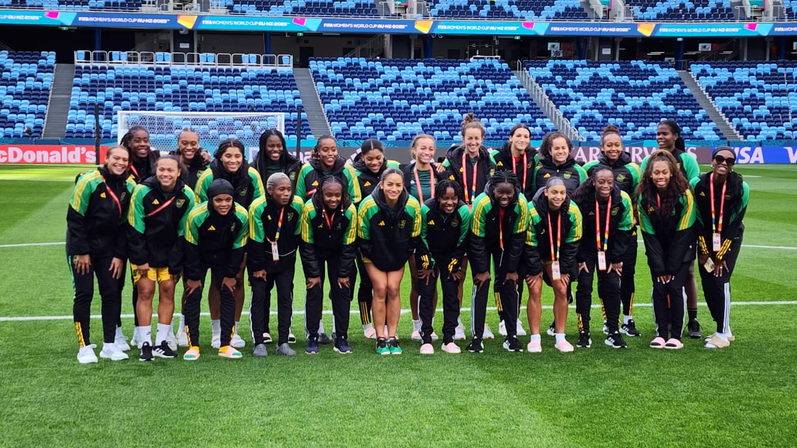

Who are the Jamaica Reggae Girlz
The Jamaica women’s national football team, nicknamed the “Reggae Girlz”, is one of the top women’s national football teams in the Caribbean region along with Trinidad and Tobago and Haiti. In 2008, the team was disbanded after it failed to get out of the group stage of Olympic Qualifying, which notably featured the United States and Mexico. The program was restarted in 2014 after a nearly six-year hiatus, finishing second at the 2014 Women’s Caribbean Cup after losing 1–0 against Trinidad and Tobago in the final. The team is backed by ambassador Cedella Marley, the daughter of Bob Marley; she helps raise awareness for the team, encourages development, and provides for it financially. Jamaica qualified for the FIFA Women’s World Cup for the first time in 2019, but the team was eliminated after losing all its matches in the group stage.

Khadija "Bunny" Shaw
Khadija "Bunny" Shaw is the captain of the Jamaica Reggae Girlz and one of the most prolific strikers in women's football. Known for her incredible goal-scoring ability, she has made a significant impact both internationally and at the club level. Some of her achievements include:
- Top scorer for Jamaica in the 2019 FIFA Women's World Cup qualifiers.
- Played for top clubs like Bordeaux in France and Manchester City in the English Women's Super League.
- Named CONCACAF Women's Player of the Year in 2022.
- Scored over 50 goals for the Jamaican national team.
- Helped lead the Reggae Girlz to their historic World Cup appearances in 2019 and 2023.